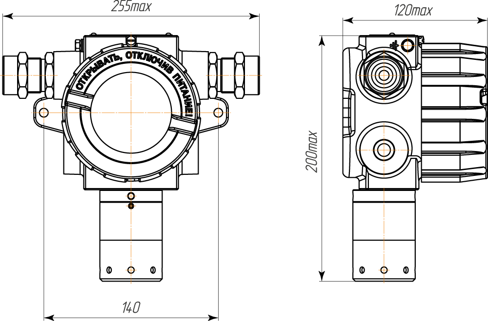

Газосигнализатор СЕНС СГ-А1 (СИ СЕНС)
Научно-производственное предприятие "Сенсор"
Раздел: Газосигнализаторы · АЗС
Цена и наличие — по запросу. Поставляем оригинал и аналоги. Доставка по России.
Модификации и размеры (3)
- Газосигнализатор СЕНС СГ-А1 (СИ СЕНС)
- Газосигнализатор СЕНС СГ-А2-КСВЗ (СИ СЕНС)
- Газосигнализатор СЕНС СГ-А2-ППК (СИ СЕНС)
Подберём нужный вариант — уточните при запросе.
Описание
Газосигнализатор СЕНС СГ-А1 (СИ СЕНС) производства Научно-производственное предприятие "Сенсор" — позиция из раздела «Газосигнализаторы» для АЗС. Компания SYNDICAT поставляет оборудование и комплектующие для автозаправочных и газозаправочных станций по всей России. Цена и наличие «Газосигнализатор СЕНС СГ-А1 (СИ СЕНС)» — по запросу: оставьте заявку или позвоните, подберём оригинал или аналог и рассчитаем доставку.